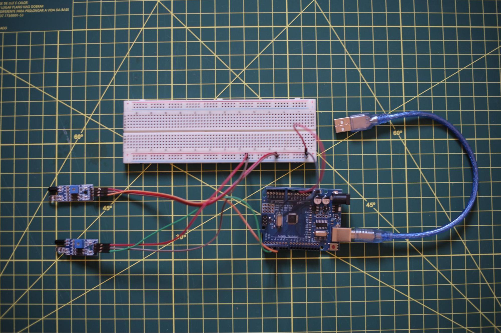
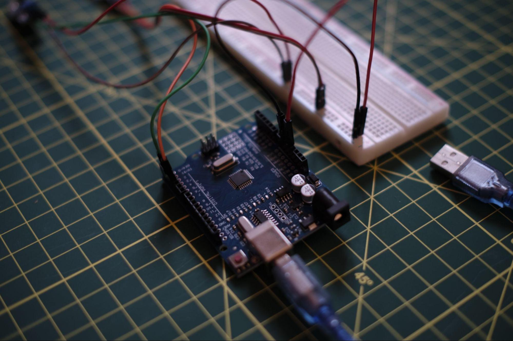
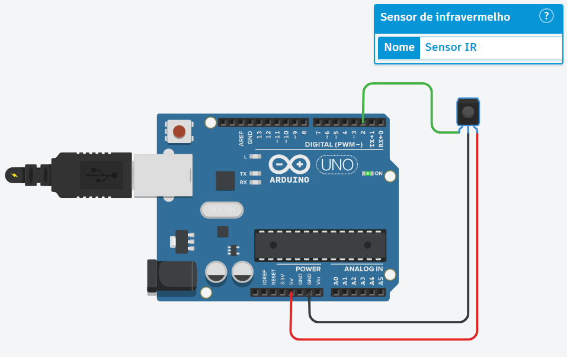
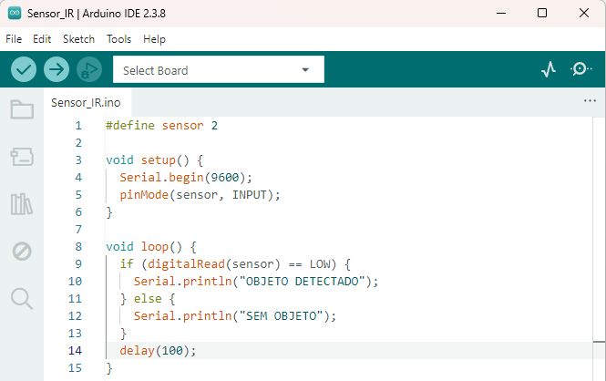
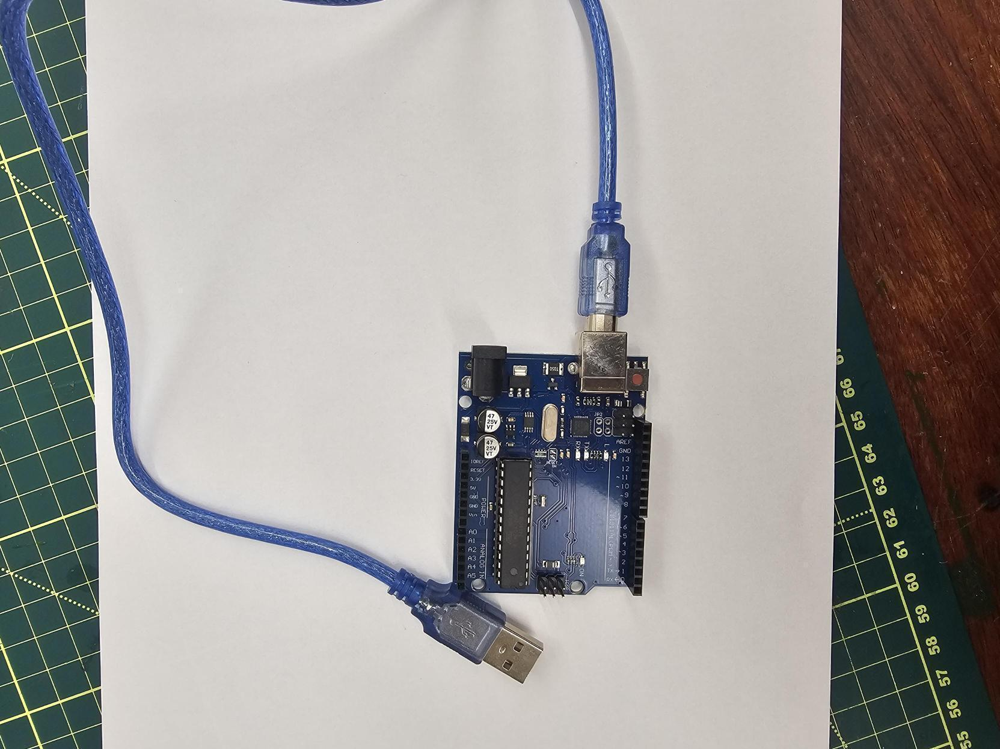
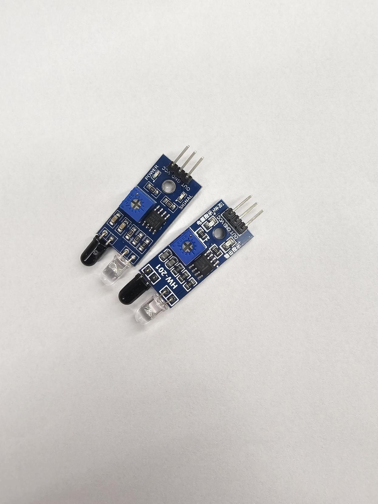
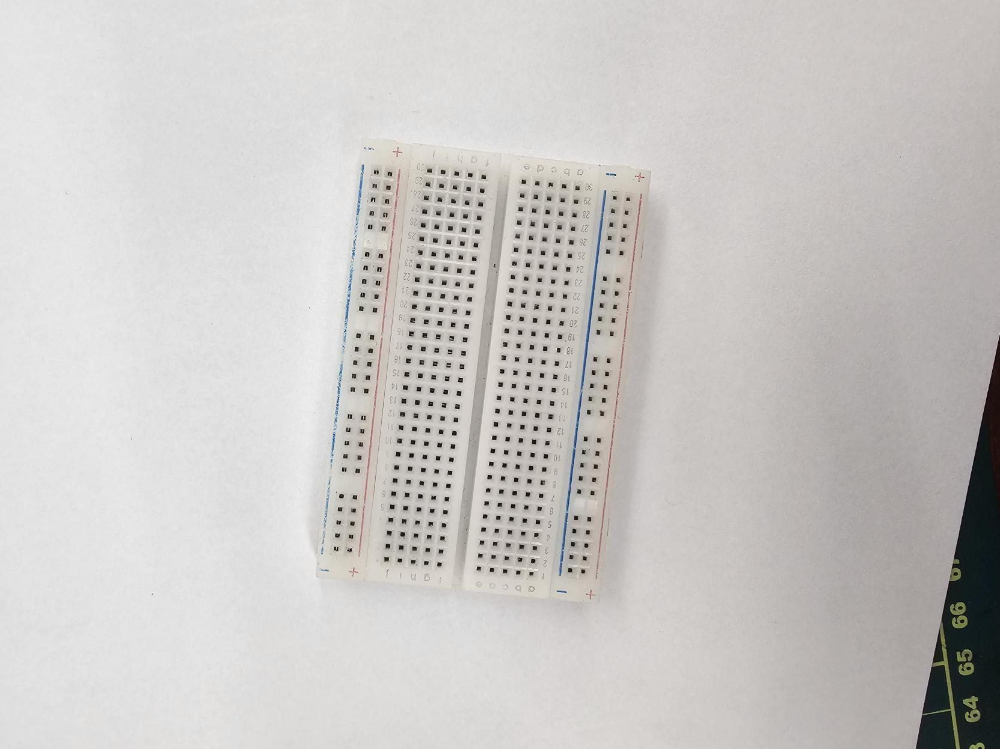
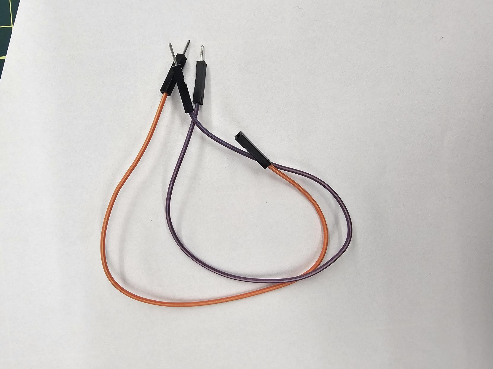
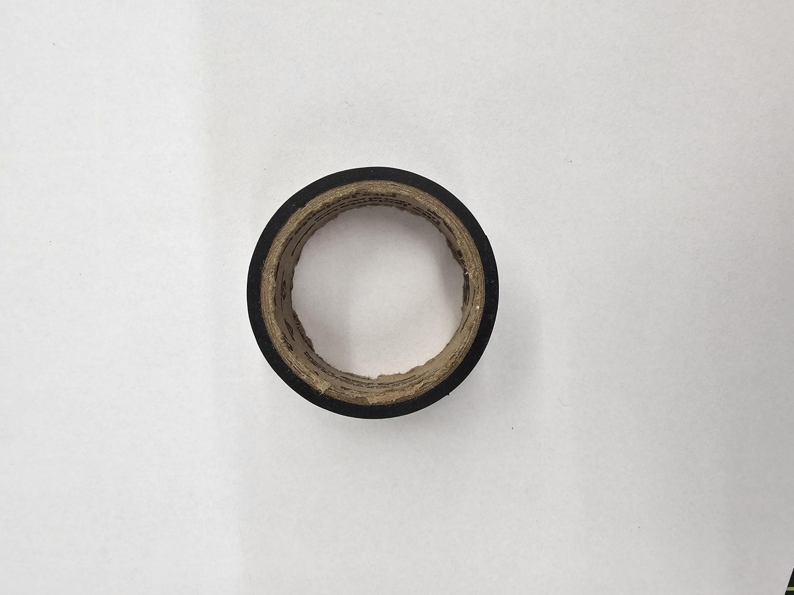
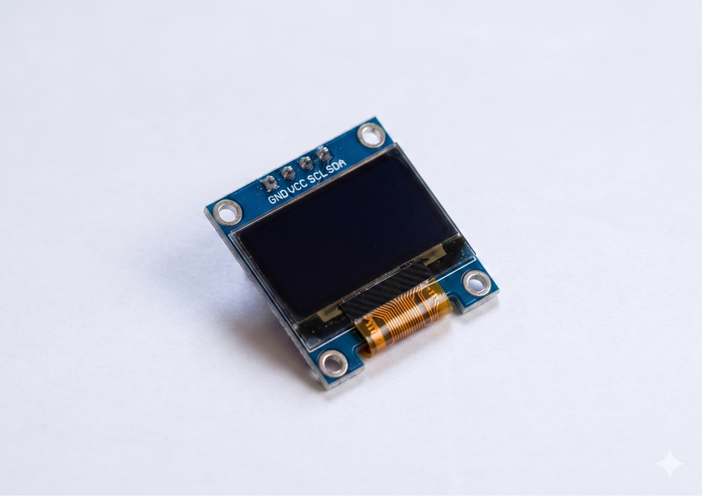

Sensor de Velocidade (Radar)
Nesta oficina, os estudantes serão desafiados a construir um sistema de medição de velocidade (radar) utilizando dois sensores infravermelhos (IR) conectados a um Arduino. O sistema detecta a passagem de um objeto pelos dois sensores, calcula o tempo entre as detecções e, com a distância fixa entre eles, determina a velocidade do objeto. Os resultados são exibidos no Monitor Serial da IDE Arduino.
A atividade propõe uma jornada prática de Pensamento Computacional, na qual os estudantes exercitam a decomposição do problema (detecção → temporização → cálculo → exibição), a abstração (transformar movimento físico em dados digitais), algoritmos e programação. Além disso, a oficina abre espaço para discussões sobre ética e vigilância, conectando a tecnologia construída a temas como radares de trânsito, privacidade e uso de dados.
O Tinkercad poderá ser utilizado como ferramenta de apoio visual para planejar a montagem do circuito antes da construção física. A programação será feita na Arduino IDE e carregada diretamente na placa.
Estrutura da Oficina
Materiais
Lista de materiais/softwares/componentes necessários
Preparar
15 minApresentação
Esta oficina propõe uma imersão prática no campo da computação física e da automação de medições, integrando conceitos de eletrônica, programação e modelagem matemática. Ao construir um radar com sensores infravermelhos, os estudantes terão a oportunidade de vivenciar o ciclo completo de desenvolvimento de um sistema computacional: desde a compreensão do problema (Como medir velocidade?), passando pela decomposição em etapas (detecção, temporização, cálculo), até a implementação física e digital de uma solução funcional.
Nesta etapa, conduza a investigação sobre o princípio da medição de velocidade por sensores de proximidade. Faremos um protótipo funcional de radar utilizando dois sensores infravermelhos conectados a um Arduino. Com os resultados captados pelo sensor, serão exibidos os dados no Monitor Serial da IDE. Como tecnologias principais, usaremos a plataforma Arduino, sensores IR e a linguagem de programação C++ adaptada ao ambiente Arduino.
A escolha do radar como objeto de estudo estabelece conexão direta com aplicações reais, como controle de trânsito, sistemas industriais, esportes e segurança, além de permitir reflexão crítica sobre vigilância e uso de dados. Durante a oficina, os estudantes serão desafiados a testar diferentes configurações (distâncias entre sensores, tipos de objetos, velocidades variadas), o que estimula a investigação, a experimentação e o pensamento sistêmico.
O objetivo central desta oficina é a construção prática e tangível do radar, utilizando componentes eletrônicos e programação, com foco nos eixos de Pensamento Computacional (decomposição, abstração e algoritmos), Mundo Digital e IA (sensores, automação) e Design com Fabricação Digital (prototipagem física e montagem). A atividade também promove a autonomia dos estudantes: embora o material ofereça um passo a passo, eles são incentivados a tomar decisões próprias, como escolher a distância entre os sensores, organizar a montagem física e interpretar os resultados obtidos. O educador atua como mediador, lançando perguntas desafiadoras e ajudando a conectar os aspectos técnicos às discussões éticas e sociais que emergem do projeto.


helpPerguntas reflexivas
- Como vocês acham que um radar de trânsito consegue medir a velocidade de um carro?
- Se um objeto passa por 2 sensores separados por uma distância conhecida, o que precisamos medir para calcular a velocidade?
- O que pode acontecer se os sensores não estiverem perfeitamente alinhados com o movimento do objeto?
- Quais aplicações um sistema como esse poderia ter além do contexto de trânsito?
O coração da nossa oficina é o sensor IR reflexivo, responsável por emitir um feixe de luz infravermelha e detectar o reflexo dessa luz em um objeto próximo. Quando um objeto passa na frente do sensor, a leitura digital muda de HIGH (não detectado) para LOW (detectado). Essa mudança pode ser capturada pelo Arduino e usada para iniciar ou interromper a medição do tempo.
Outro elemento central é o conceito de velocidade média, dado pela fórmula:
Velocidade média = Distância ÷ Tempo
Ao definir uma distância fixa entre os dois sensores (medida previamente pelos estudantes) e registrar o tempo decorrido entre a ativação do primeiro e do segundo sensor, torna-se possível calcular a velocidade média do objeto em movimento.
O Arduino será programado para:
- Monitorar continuamente os dois sensores
- Iniciar a contagem do tempo quando o primeiro sensor for acionado
- Parar a contagem quando o segundo sensor for acionado
- Calcular a velocidade e exibir os resultados no Monitor Serial
tips_and_updatesDicas de condução
Embarque
Antes de iniciar a montagem completa do radar, proponha uma atividade rápida para que os estudantes conheçam o funcionamento básico do sensor IR. Para que essa experiência ocorra de forma ágil e produtiva dentro do tempo disponível, algumas preparações prévias são recomendadas.
Preparação do educador (antes da aula)
- Monte um circuito-modelo
com um Arduino Uno e um sensor IR conectado:
- VCC → 5V,
- GND → GND,
- OUT → pino digital 2
Esse circuito servirá como referência e também poderá ser utilizado caso algum grupo enfrente dificuldades.
- Verifique se a placa selecionada na Arduino IDE corresponde ao Arduino Uno (caso contrário, oriente os estudantes a fazer o ajuste em "Ferramentas" → "Placa" → "Arduino Uno").
- Se possível, deixe as placas já conectadas aos computadores e os componentes organizados sobre a mesa.
- Disponibilize o código de teste em formato .ino ou .txt, a fim de que os estudantes possam copiá-lo e colá-lo na Arduino IDE, evitando erros de digitação e otimizando o tempo.
Durante a aula (com os estudantes)
- Oriente os estudantes a conectar fisicamente o sensor IR ao Arduino e seguir o esquema já apresentado: (VCC → 5V, GND → GND, OUT → pino 2). Enquanto isso, circule pela sala para verificar as conexões.
- Solicite que copiem o código disponibilizado na Arduino IDE, realizem o upload para a placa e abram o Monitor Serial.
- Proponha aos estudantes que passem a mão diante dos sensores, mantendo diferentes distâncias, e observem as mudanças apresentadas no Monitor Serial.
- Peça que registrem, no Diário de Bordo, a distância máxima aproximada em que o sensor consegue detectar a mão.
Engenharia reversa (reflexão sobre o código)
Após a experimentação, o educador pode conduzir uma breve leitura comentada do código com a turma, fazendo perguntas como:
- O que significa #define sensor 2?
- Para que serve o pinMode(sensor, INPUT)?
- Por que usamos LOW para detectar a presença do objeto?
- O que aconteceria se removêssemos o delay(100)?
Essa atividade de engenharia reversa ajuda os estudantes a relacionar o comportamento observado no Monitor Serial aos comandos do código, preparando o terreno para a programação do radar na etapa seguinte.








Criar
120 minProtótipo
Radar de Velocidade com Sensores IR

tips_and_updatesDicas de condução
Refletir
45 minAprendizados
Dinâmica de compartilhamento: Feira de resultados
Organize um momento para que os grupos compartilhem suas experiências e descobertas. Como cada grupo pode ter testado diferentes distâncias, objetos e configurações, a troca de resultados enriquece a turma toda.
Sugestão de organização em 2 momentos
Momento 1 – Teste cruzado (10 min)
Peça aos grupos que troquem de lugar e testem os radares dos colegas. Cada grupo deve passar um objeto pelo radar de outro grupo e observar os valores obtidos no Monitor Serial. Questione: O radar do outro grupo funcionou de forma parecida com o seu? Os valores de velocidade foram compatíveis com o movimento realizado?
Essa dinâmica permite aos estudantes experimentar diferentes montagens e perceber variações de calibração, alinhamento e sensibilidade entre os grupos.
Momento 2 – Apresentação dos resultados (15 min)
Cada grupo apresenta rapidamente (2–3 minutos) seus principais resultados: distância escolhida entre sensores; maior e menor velocidades registradas; objetos que funcionaram melhor e pior; e alguma dificuldade enfrentada. Se participaram do Teste 5 (“Medição sincronizada entre grupos”) ou dos desafios previstos em "Vá além", oriente-os a destacar as conclusões comparativas.
helpPerguntas reflexivas
- Qual foi a maior velocidade que vocês conseguiram medir? E a menor? Os valores fizeram sentido em relação à velocidade real do movimento?
- Houve algum objeto que não foi detectado corretamente? O que isso nos ensina sobre as limitações dos sensores infravermelhos?
- Ao testar o radar de outro grupo, vocês perceberam alguma diferença de comportamento? O que pode ter causado essas diferenças?
- Qual foi a maior dificuldade que vocês enfrentaram? Como resolveram?
- Se vocês fossem melhorar o radar, o que mudariam (ex.: adicionar display, mais sensores, registrar dados)?
Para ir além
30 minSugira caminhos para que os estudantes continuem explorando e aprimorando seus projetos.
- Adicionar display
OLED
Os estudantes podem tornar o radar mais autônomo substituindo a exibição no Monitor Serial por um display OLED 0,96" I2C. Alguns cuidados importantes: verificar a conexão correta dos pinos SDA e SCL (no Arduino Uno, correspondentes às portas analógicas A4 e A5), incluir as bibliotecas necessárias para telas OLED (como Adafruit_SSD1306.h e Adafruit_GFX.h) e inicializar o objeto do display no início do código. Diferentemente de um LCD comum, o posicionamento do texto no OLED é feito por pixels por meio do comando display.setCursor(x, y), e as informações só aparecem na tela após o comando display.display(). O endereço I2C mais comum para este modelo é o 0x3C, mas vale a pena testar caso o display não ligue logo no primeiro teste. - Medir velocidade em uma
rampa (2 radares)
Proponha aos estudantes que construam uma pequena rampa (pode ser de papelão) e posicionem 2 radares em sequência ao longo do trajeto de descida de um objeto (ex.: uma bolinha ou carrinho). O primeiro radar deve medir a velocidade no início da rampa; o segundo, a velocidade no final. Questione os estudantes: A velocidade aumentou? Quanto? Isso faz sentido com a lei da Física? A atividade conecta o projeto a conceitos de aceleração, atrito e conservação de energia. - Medir aceleração com 3
sensores (queda livre)
Como desafio avançado, os estudantes podem adicionar um terceiro sensor ao sistema, posicionando os 3 sensores com distâncias iguais entre si (ex.: 20 cm entre cada par). Ao deixar um objeto cair verticalmente (com cuidado para não danificar os sensores), é possível medir a velocidade em 2 trechos consecutivos. Com os 2 valores de velocidade e a distância entre eles, calcula-se a aceleração. Indague: O valor encontrado se aproxima da aceleração da gravidade (9,8 m/s²)? Se não, o que pode estar interferindo?